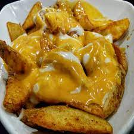

Wedges Sauce Recipes
Description
Ingredients
BAKED POTATOES
- 2 potatoes (350 g) potatoes, peel potato and sliced into wedges
- 1/4 tsp Salt
- 1/4 tsp Paprika
- 1/2 tsp White pepper
- 1/2 tbsp Oil
CHEESE SAUCE
- 5 slices (100 g) American cheddar cheese
- 1/2 tablespoon corn starch
- 1/2 cup Fresh milk
- 1/2 tbsp Chili sauce
- 3/4 tsp garlic powder
- 1/4 tsp white pepper powder
- 1/4 tsp salt
Steps
- SLICE & SEASON POTATOES: Peel potatoes and slice into wedges. Place into a mixing bowl and season with salt, paprika, pepper, and oil. Toss to combine.
- BAKE POTATO: Line baking tray with aluminium foil. Place potatoes in one layer and baked at 200°C for 30 minutes.
- TEAR CHEESE: Tear cheese into small pieces into a pot. Add cornstarch. Toss to combine.
- ADD MILK: Add 1/2 cup evaporated milk into the pot.
- COOK: Cook over low heat, stirring constantly with whisk until melted, bubbly, and thickened (about 5 minutes). Mixture will look thin at first but will thicken after heating.
- SEASON: Season with chili sauce, garlic powder, white pepper, and salt. You may want to, thin to desired consistency with additional evaporated milk.
- SERVE: Pour cheese sauce over baked potato and drizzle with mayonaise.